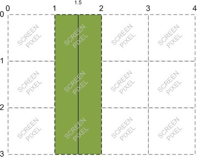

A frequently used trick for dealing with lines that are blurry because they are drawn on the border between two pixels is to offset the canvas by -0.5 pixels.
This allows us to see the space between the 1px wide, 1px evenly spaced lines on the bottom half of the canvas, but the white space between still looks smaller than the red stripes. But, we can't see Line 1 from our code which is a 1px wide line from (0, 0) to (0, 40). Only by making the lines wider can we see the line.
Also, our vertical stripes now don't extend to the bottom of the canvas, there is a ligher colored section of pixels at the bottom of each line. We've also just traded odd-width blurry lines for even-width blurry lines.
ctx.clearRect(0, 0, 100, 100);
ctx.translate(-0.5, -0.5);
ctx.lineWidth = parseInt(lineWidth);
// Line 1
ctx.beginPath();
ctx.moveTo(0, 0);
ctx.lineTo(0, 40);
ctx.stroke();
// Line 2
ctx.beginPath();
ctx.moveTo(25, 0);
ctx.lineTo(60, 40);
ctx.stroke();
// Stripes
for (var i = 0; i < 100; i += parseInt(spacing) + 1) {
ctx.beginPath();
ctx.moveTo(i, 50);
ctx.lineTo(i, 100);
ctx.stroke();
}
ctx.resetTransform();
An updated diagram from Dive Into HTML 5 with our 0.5px offset line:
“But, if you try to draw a line from (1.5, 0) to (1.5, 3), the browser will draw a line covering 0.5 screen pixels on either side of x=1.5, which results in a true 1-pixel-wide line:”
